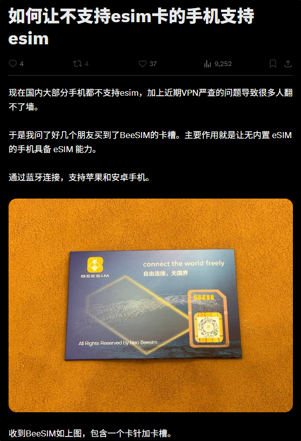
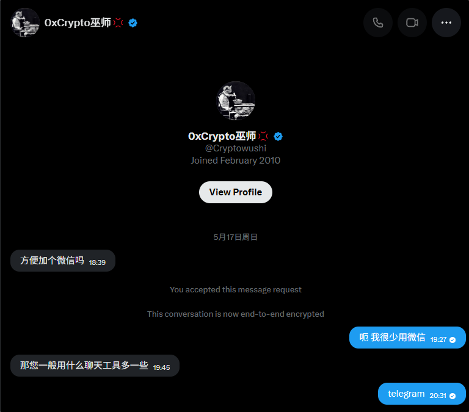
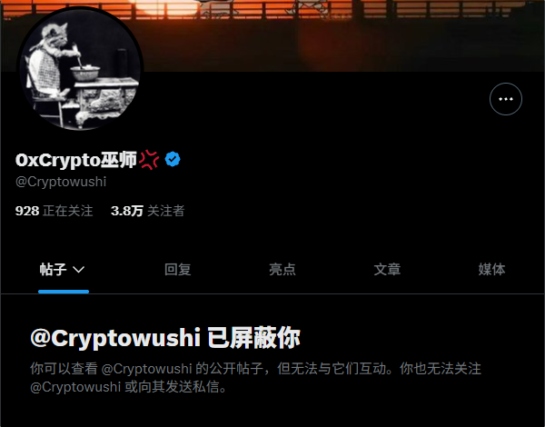
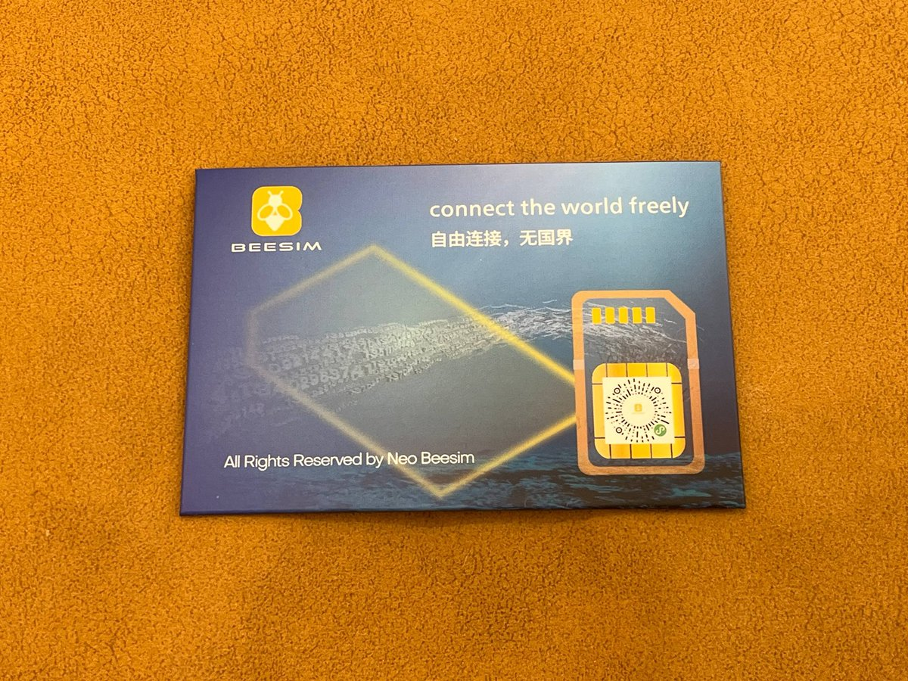
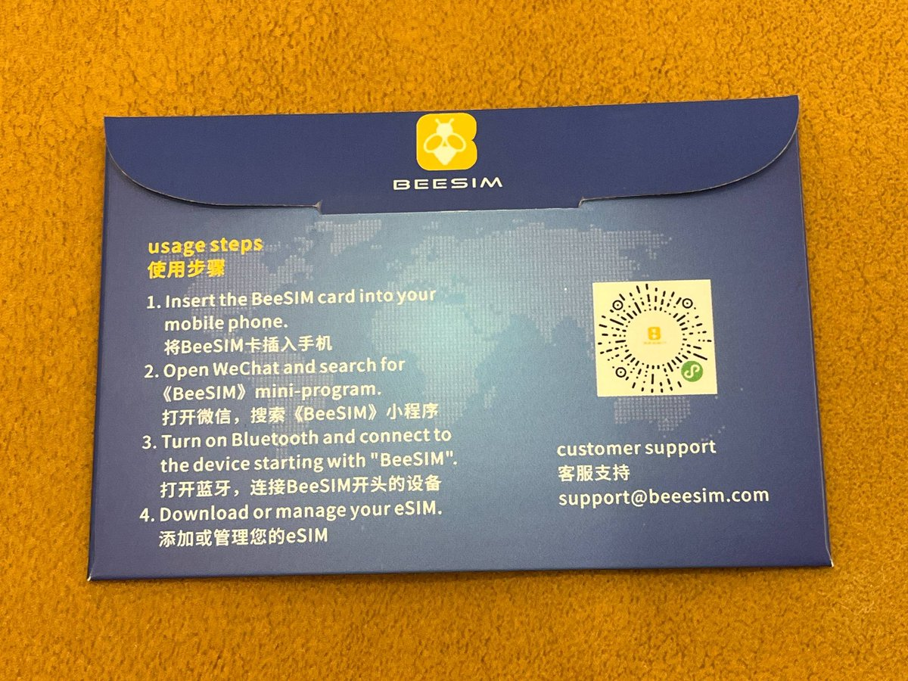
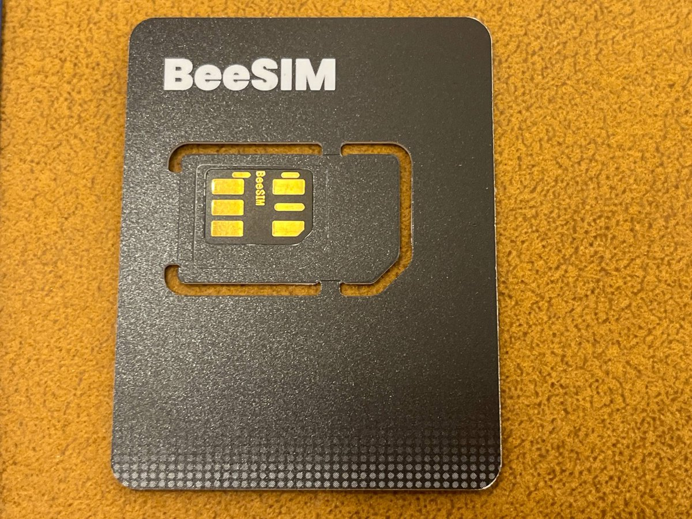
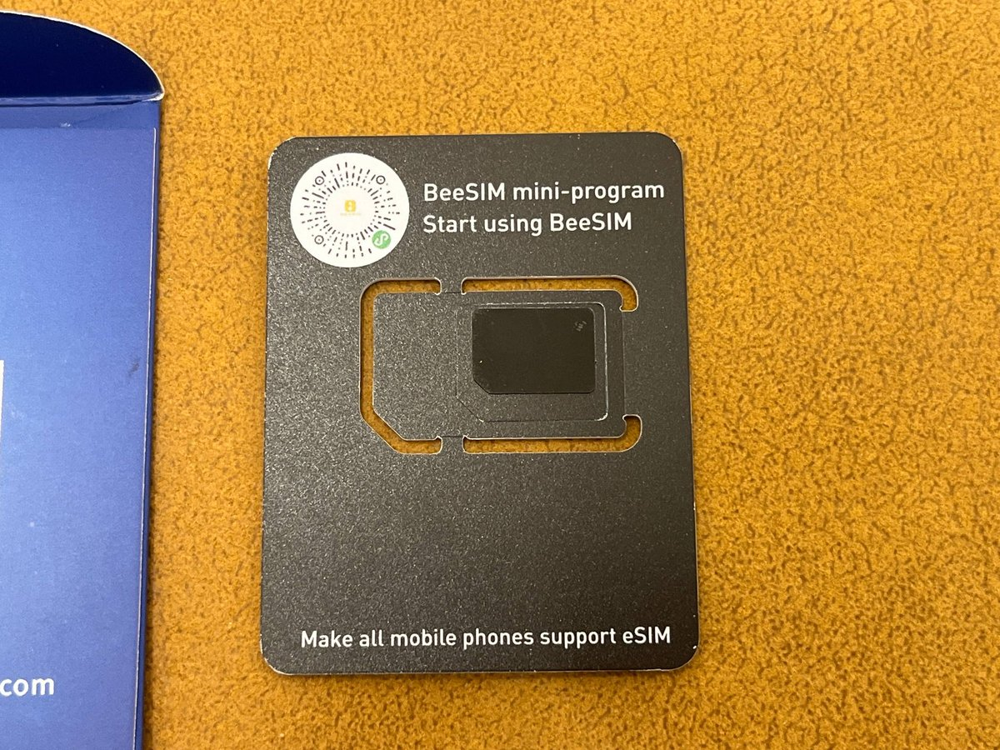

如果Crypto博主想做eSIM内容，我没意见。去年双12测BeeSIM蓝牙卡的图片很荣幸被引用了2次，并且 @Cryptowushi 发布前仅向我私信索要微信
我在12小时前发了《用我的图云评测》并附带他的推文，并取关了他。之后他删除了推文并屏蔽了我但文章还在，我也不想再多说些什么
看吧👇

我在12小时前发了《用我的图云评测》并附带他的推文，并取关了他。之后他删除了推文并屏蔽了我但文章还在，我也不想再多说些什么
看吧👇







介绍一下BeeSIM，奶昔论坛上说是超雪（卡贴）团队做的，独创蓝牙写卡。只要手机支持小而美和蓝牙，就可以直接用张小龙小程序写卡、切卡，甚至跨设备管理。 https://t.co/skQDd4nz8w https://t.co/XQKeNJuaD4